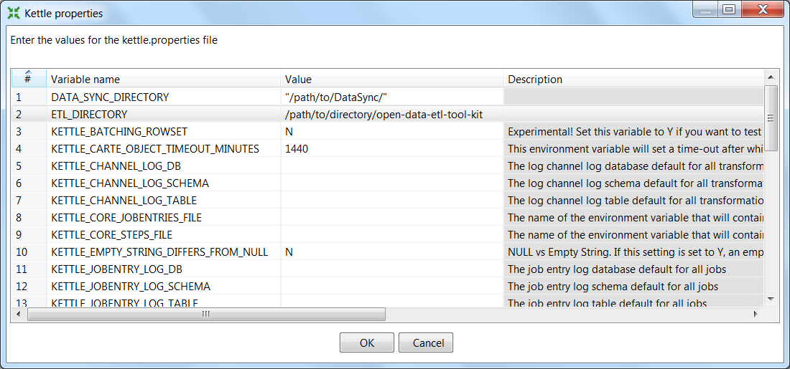

This section outlines basic installation procedures for Kettle, the open data ETL framework, and other necessary components. This section also discusses some suggested configurations which will allow for easier maintenance over time.
Installation consists of three parts
First, determine a location of the installation of the toolkit. All scripts, programs, and transformations related to ETL processes will remain in this directory.
Using git:
$ cd /path/to/directory
$ git clone
Alternatively, one can download the zip file from GitHub and extract the contents to the above directory.
Next, we will need to obtain Kettle or Pentaho. Download Kettle to your computer.
The Kettle installation should allow for easy upgrades to the data integration software without needing to reconfigure any ETLs. Likewise, upgrading to new versions should permit testing. Therefore, Kettle should be installed to a version-specific folder, such as data-integration-x.y.z. Assuming the zipped file is located in ~/Downloads, one could run the following:
$ cd ~/Downloads
$ unzip pdi-ce-4.4.0-stable.zip -d path/to/directory/open-data-etl-utility-kit
$ mv data-integration data-integration-4.4.0
Create a symlink between data-integration and the current version:
$ cd /path/to/directory/open-data-etl-utility-kit
$ ln -s data-integration-x.y.z data-integration
Future versions of Kettle can be installed and tested in it’s own directory without impacting production. Once ETLs are ready to use a newer version, update the symlink to the appropriate directory.
This framework uses Socrata DataSync to post data to the portal. This utility is only compatible with Socrata portals. Fortunately, this utility handles incremental updates and upserting without additional logic in the ETL.
You may install DataSync to any directory. Later configuration will direct Kettle to the correct location.
You can configure DataSync to run on a “headless” Linux machine–a Linux server which is only accessible through a command prompt. Running DataSync on a headless machine requires configuration to pass the domain, username, password, and token without a graphical user interface (GUI). Instructions on configuring a headless is available on the DataSync support site. The DataSync directory contains templates for the config.json file
If you installed DataSync to another directory, such as /path/to/DataSync, then you must edit /path/to/directory/open-data-etl-utility-kit/DataSync/load_preferences.sh. Specifically, the script must now read:
java -jar /path/to/DataSync/datasync.jar --config config.json --jobType LoadPreferences
In order for later automation.
Users will need to define two environmental variables for their Kettle installation:: * Location of the ETL directory (e.g., /path/to/directory/open-data-utility-kit) * Location of the DataSync installation (e.g., /path/to/directory/open-data-utility-kit/DataSync) This configuration will only need to be adjusted once for each environment. It will also allow for each deployment of ETLs across multiple operating systems without needing to configure the ETL itself.
Launch Kettle by finding and launching spoon.sh, or, run the following in a command prompt:
> sh /path/to/directory/open-data-utility-kit/data-integration/spoon.sh
Once Kettle launches, selected Edit > Edit the kettle.properties file:
Right-click to insert a new line. Once a blank line is available, add ETL_DIRECTORY as a variable name and add the path to your ETL directory under value (e.g., /path/to/directory/open-data-utility-kit).
Add another line and enter DATASYNC_DIRECTORY as a variable name and /path/to/directory/open-data-utility-kit/DataSync
The kettle.properties file can also be manually edited. It is typically located under the following directories, depending on your current version of Windows:
$HOME\.Kettle
Navigate to the appropriate location and open kettle.properties. Add the following lines to the file and save:
ETL_DIRECTORY = /path/to/DataSync
DATA_SYNC_DIRECTORY = /path/to/directory/open-data-utility-kit/DataSync
First, determine a location of the installation of the toolkit. All scripts, programs, and transformations related to ETL processes will remain in this directory.
Using git:
$ cd C:\path\to\directory
$ git clone
Alternatively, one can download the zip file from GitHub and extract the contents to the above directory.
Next, we will need to obtain Kettle or Pentaho. Download [Kettle](http://community.pentaho.com/projects/data-integration/) and extract to the ETL directory. Assuming the download is located in ~/Downloads, one could run the following:
INSERT MORE INSTRUCTIONS
The Kettle installation should allow for easy upgrades to the data integration software without needing to reconfigure any ETLs. Likewise, upgrading to new versions should permit testing.
Install Kettle to data-integration-x.y.z, where x.y.z is the version number (e.g., 4.4.0).
Create a link between data-integration and the current version:
> cd C:\path\to\directory\open-data-etl-utility-kit
> mklink /j "data-integration-x.y.z" "data-integration"
Future versions of Kettle can be installed and tested in it’s own directory without impacting production. Once ETLs are ready to use a newer version, update the symlink to the appropriate directory.
This framework uses Socrata DataSync to post data to the portal. This utility is only compatible with Socrata portals. Fortunately, this utility handles incremental updates and upserting without additional logic in the ETL.
Users will need to define two environmental variables for their Kettle installation:: * Location of the ETL directory (e.g., C:pathtodirectoryopen-data-etl-utility-kit) * Location of the DataSync installation (e.g., C:pathtodirectoryopen-data-etl-utility-kitDataSync) This configuration will only need to be adjusted once for each environment. It will also allow for each deployment of ETLs across multiple operating systems without needing to configure the ETL itself.
Launch Kettle by finding and launching spoon.bat, or, run the following in a command prompt:
> C:\path\to\directory\open-data-etl-utility-kit\data-integration\spoon.bat
Once Kettle launches, selected Edit > Edit the kettle.properties file:
.. image:: images/kettle.properties_configuration_windows.PNG
alt: Configuring kettle.properties on Windows
Right-click to insert a new line. Once a blank line is available, add ETL_DIRECTORY as a variable name and add the path to your ETL directory under value (e.g., C:/path/to/directory/open-data-utility-kit).
Add another line and enter DATA_SYNC_DIRECTORY as a variable name and C:/path/to/directory/open-data-utility-kit/DataSync. It is recommended to use forward-slashes to maintain compatibility with Linux deployment.
The kettle.properties file can also be manually edited. It is typically located under the following directories, depending on your current version of Windows:
| *Windows:* C:\Documents and Settings\<username>\.kettle\
| *Windows Vista and after:* C:\Users\<username>\.kettle
Navigate to the appropriate location and open kettle.properties. Add the following lines to the file and save:
ETL_DIRECTORY = C:/path/to/directory/open-data-etl-utility-kit
DATA_SYNC_DIRECTORY = C:/path/to/directory/open-data-etl-utility-kit/DataSync
After completing this section, the framework should resemble the following structure. Several scripts use relative directories dependant on the following layout. Any deviation will require some, but simple, reconfiguration.
open-data-etl-kit may be renamed to meet your preferences. Each directory will have the following responsibilities:
Open open-data-etl-kit/ETL/Utilities/ETL_Completion_E-Mail.ktr in Kettle. Select Edit -> Settings and select the Parameters tab. Enter the appropriate values for: